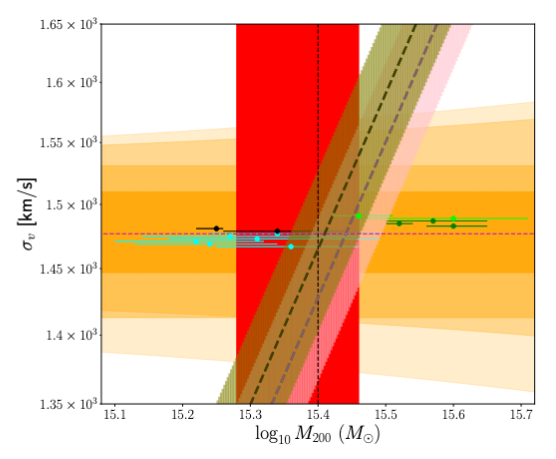
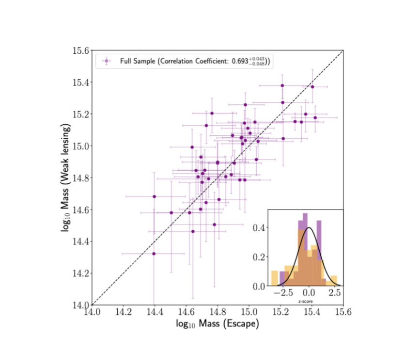
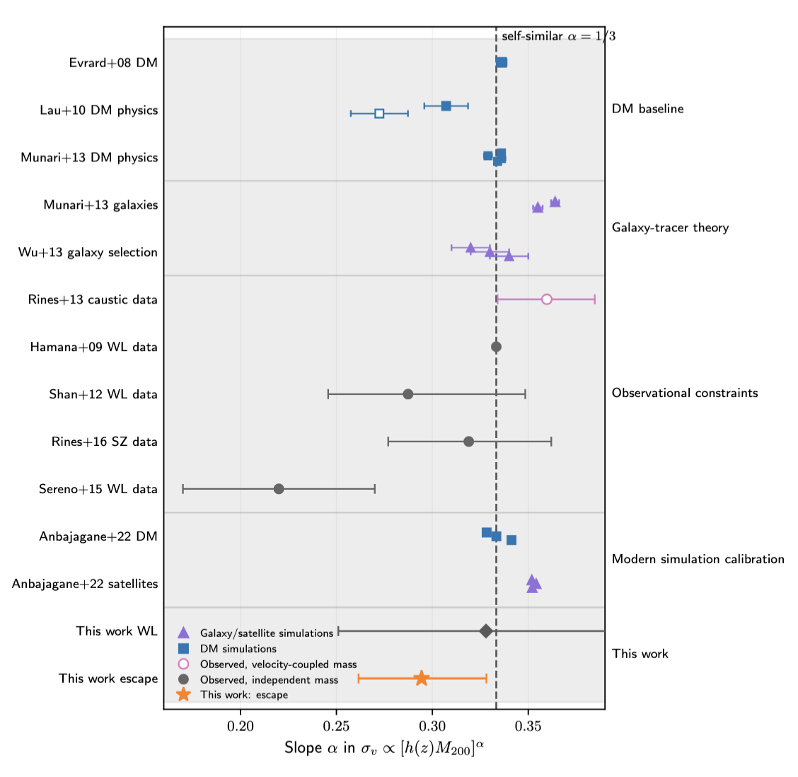
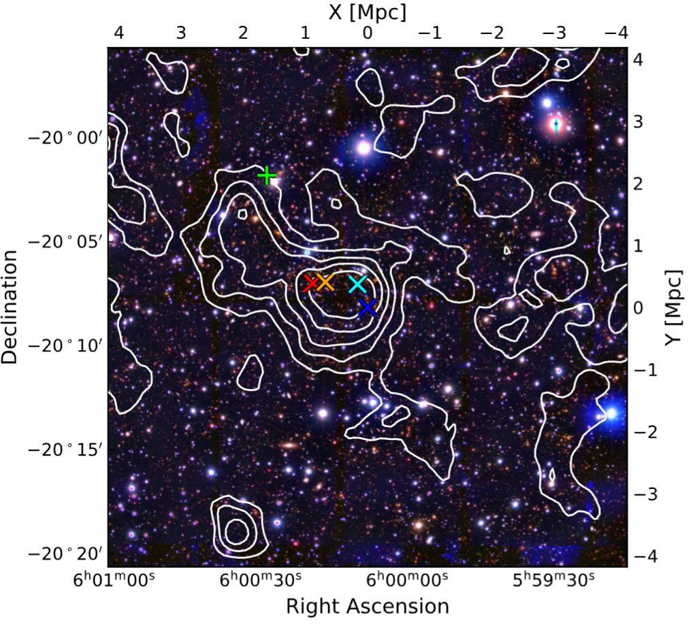
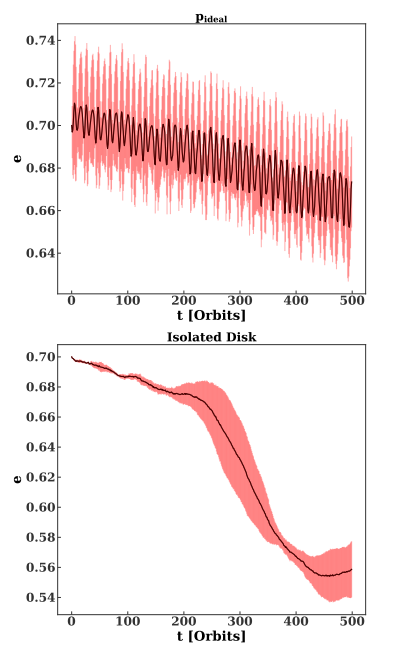
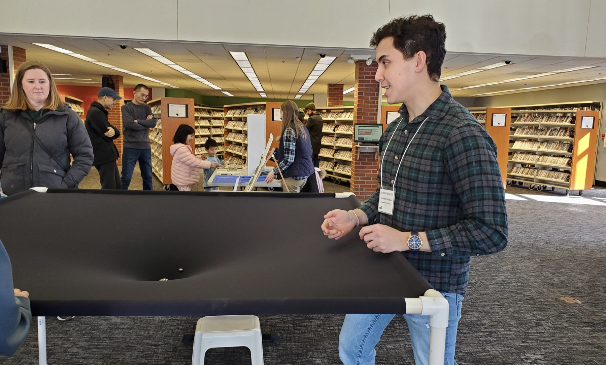
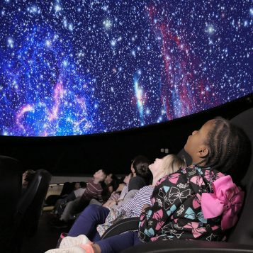

Phase-space dynamics
Galaxy redshifts define a projected radius-velocity space. The fastest galaxies trace the energy scale needed to escape the cluster potential.
Welcome.
I am Alex Rodriguez, a 6th-year astronomy PhD student at the University of Michigan and a Caltech/IPAC Visiting Research Fellow studying galaxy cluster dynamics, weak lensing, and the expansion history of the Universe.
Galaxy redshifts define a projected radius-velocity space. The fastest galaxies trace the energy scale needed to escape the cluster potential.
Galaxy shear maps projected mass. I use weak lensing to study cluster substructure and identify candidate cosmic-web filaments.
Escape from a cluster depends on mass and on the accelerated expansion of the background universe.
The escape edge is the outer boundary of the radius-velocity diagram. More massive clusters have deeper potentials, so their fastest galaxies reach higher velocities. Sparse sampling lowers the measured edge.

AS1063
A disturbed massive cluster where the escape-velocity mass agrees with lensing and SZ estimates.
Rodriguez et al. 2024
Cluster Sample
A larger cluster sample showing strong agreement between independent lensing and escape-velocity mass estimates.
Rodriguez & Miller 2025
Velocity Dispersions
We measure \(\sigma_v\) for 45 clusters in observations and measure the predicted velocity bias to be at the same level as relative differences in cosmological simulations.
Rodriguez et al. 2026a (in prep)
The escape velocity profile is affected by the expansion of the background, making it the only known dynamical probe of cosmology, complementary to distance-based probes.
This is particularly attractive when analyzing the expansion history of our universe through probes like \(q(z)\), where recent DESI results have hinted at decelerating cosmologies. Rodriguez 2026b, in prep.
My lensing and earlier dynamics work ask how gravitational systems assemble, from galactic nuclei to cluster-scale filaments.

MACSJ0600
Subaru/HSC shear shows projected mass structure around MACS J0600.1-2008. Magellan/IMACS spectroscopy will test whether those features are genuine cluster-connected filaments.
Rodriguez et al. 2026c (in prep)

Nuclear Dynamics
Eccentric nuclear disks with a secondary SMBH can induce slowed secular evolution, along with eccentricity oscillations, aligning the disk and enhancing TDE rates.
Rodriguez, Generozov & Madigan 2021Science Communication Fellowship
Designed a hands-on demo for children explaining how galaxies can escape from galaxy clusters.

Planetarium
Served for two years as a planetarium presenter, designing and giving interactive astronomy shows for the public.

Lead Instructor
Led four semesters and eight mini-terms, designing lectures, labs, assignments, and projects on the Sun, Moon, planets, stars, comets, meteors, and the motion of the sky.
I interned at Wells Fargo in Summer 2025 as a Quantitative Analyst in Market and Counterparty Risk Analytics, where I modeled correlated default structure in global portfolios using unsupervised learning and multi-factor regression. I am interested in alpha research at the intersection of Bayesian inference, variational methods, entropy-based modeling, and unsupervised learning. My astrophysics research has trained me to build probabilistic models for noisy, incomplete, high-dimensional data, and I am particularly interested in using that background to identify latent market structure and develop systematic trading signals.